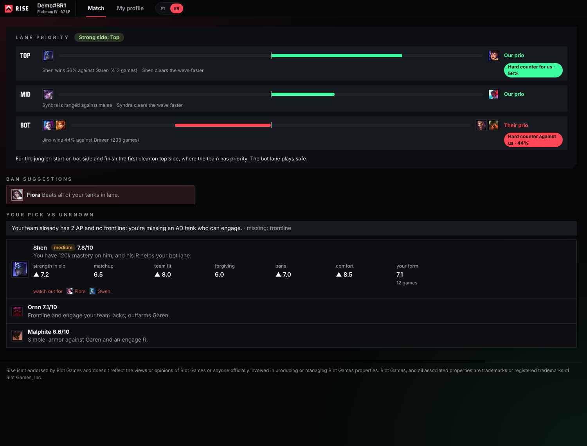
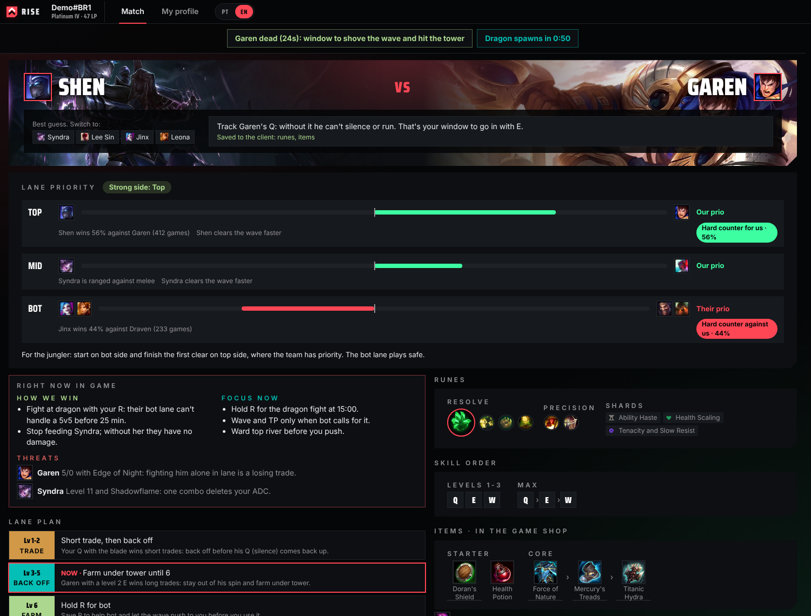
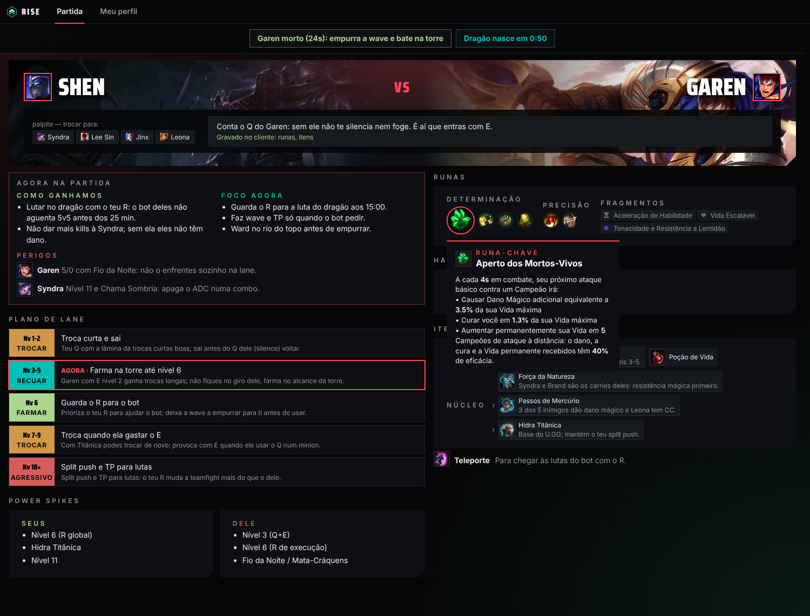
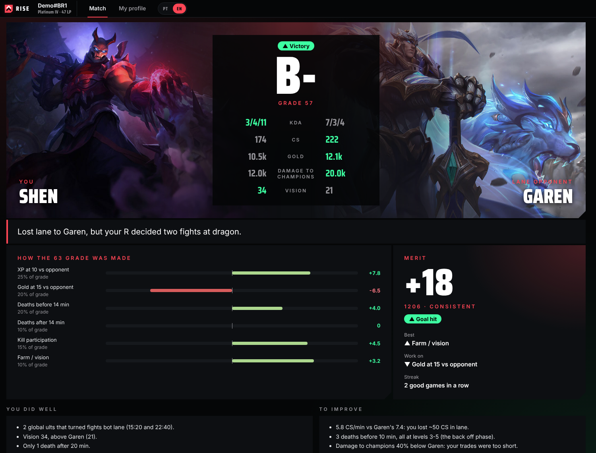
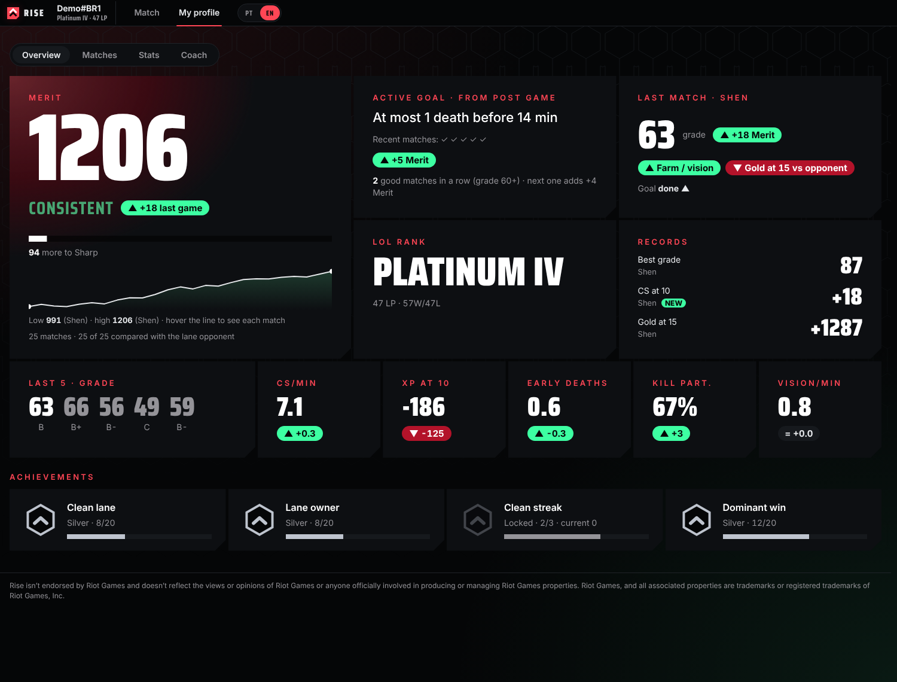
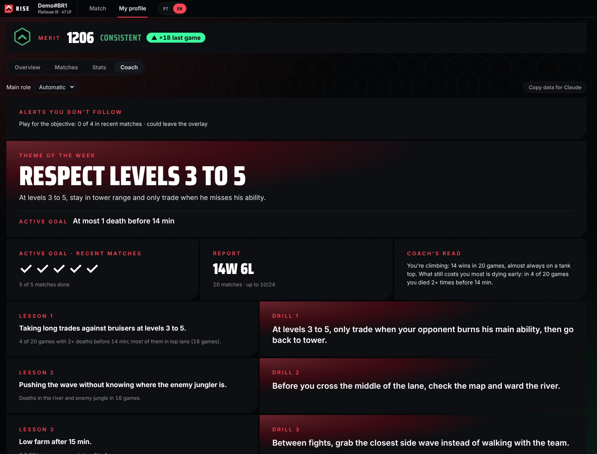

Rise
A desktop companion for League of Legends that helps players prepare each match and learn from their own games.
Rise isn’t endorsed by Riot Games and doesn’t reflect the views or opinions of Riot Games or anyone officially involved in producing or managing Riot Games properties. Riot Games, and all associated properties are trademarks or registered trademarks of Riot Games, Inc.
How it works
1. Open with the League client
Rise runs on the player’s computer next to the League client and reads only the player’s own session.
2. Champion select
Lane priority and hard counters, then a plan for the lane with runes, items, spells and skill order, built from aggregated ranked data. Rise writes the suggested rune page and item set to the client; the player can change or ignore them.
3. During the game
Short reminders using only what the player can already see in the game: objective timers and the next planned item.
Languages
Portuguese (Brazil) and English, picked at the top of the app. Summoner’s Rift only: top and jungle today, the other lanes next.
4. After the game
A review of the player’s own match (deaths, CS, gold and XP against the lane opponent) and one focus for the next game.
A plan for your lane
Which lane will likely push first, the hard counters and the strong side, from real high-elo matchup results. Then a plan for the lane with the reason for each suggestion, so the player decides. Hover any item, rune, spell or ability for its full description.



Learn from your own matches
A review of the match the player just finished, compared with the lane opponent. Mérito, Rise’s own measure of how well each game was played, moves with the quality of play more than with the result, with personal levels that are never compared with the ranked ladder. A weekly coach note comes from the player’s recent games.



Screenshots use a fictional demo account (Demo#BR1), with the app in English. Rise is available in Portuguese (Brazil) and English: the PT | EN switch at the top changes the app and the coach texts.
What Rise doesn’t do
No memory reading, no automation
Rise never reads or changes game memory and never plays or clicks for the player.
No hidden information
Rise only shows what the player can already see in the game or client.
Your data stays with you
The player’s match history is stored on their own computer. From other players, only aggregate statistics are kept. Read the Privacy Policy for details.